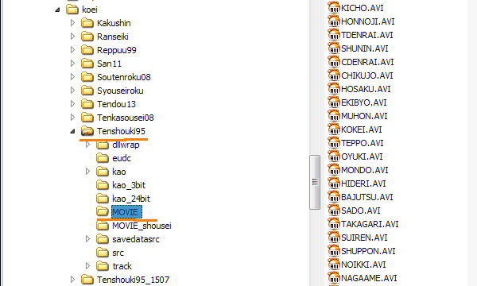

-
１つ目のCDチェック
ここでは基礎的なCD挿入チェックがなされている。
0048D336 |. 85C0 TEST EAX,EAX
0048D338 |. 74 4B JE SHORT TENSHOU.0048D385
0048D33A |. 68 78C24C00 PUSH TENSHOU.004CC278 ; ASCII "TENSHOUKI95"
0048D33F |. E8 D62C0200 CALL
0048D344 |. 83C4 04 ADD ESP,4
0048D347 |. A3 802A4D00 MOV DWORD PTR DS:[4D2A80],EAX
0048D34C |. 83F8 FF CMP EAX,-1 ; 上の行で、得た値と-1とを比較 ←この行をNOP NOP NOP(=90 90 90)とすると１つダイアログが削れる。
0048D34F |. 75 34 JNZ SHORT TENSHOU.0048D385 ; 一方はリターンを、他方はダイアログへと。
0048D351 |> 6A 05 /PUSH 5 ; /Style = MB_RETRYCANCEL|MB_APPLMODAL
0048D353 |. A1 2CC24B00 |MOV EAX,DWORD PTR DS:[4BC22C] ; |
0048D358 |. 68 842A4D00 |PUSH TENSHOU.004D2A84 ; |Title = "「信長の野望 天翔記 with パワーアップキット」"
0048D35D |. 68 B42A4D00 |PUSH TENSHOU.004D2AB4 ; |Text = "「信長の野望 天翔記 with パワーアップキット」のＣＤ－ＲＯＭを入れてください"
0048D362 |. 50 |PUSH EAX ; |hOwner => 00120B72 ('天翔記 for Windows 95',class='Tenshouki95')
0048D363 |. FF15 A4754E00 |CALL DWORD PTR DS:[<&USER32.MessageBoxA>; \MessageBoxA
0048D369 |. 83F8 02 |CMP EAX,2
0048D36C |. 74 17 |JE SHORT TENSHOU.0048D385
0048D36E |. 68 78C24C00 |PUSH TENSHOU.004CC278 ; ASCII "TENSHOUKI95"
0048D373 |. E8 A22C0200 |CALL
0048D378 |. 83C4 04 |ADD ESP,4
0048D37B |. A3 802A4D00 |MOV DWORD PTR DS:[4D2A80],EAX
0048D380 |. 83F8 FF |CMP EAX,-1
0048D383 |.^74 CC \JE SHORT TENSHOU.0048D351
0048D385 \> C3 RETN
0048D386 $ 833D 802A4D00 >CMP DWORD PTR DS:[4D2A80],-1
0048D38D . 74 2B JE SHORT TENSHOU.0048D3BA
-
２つ目のCDチェック
2回目のCDチェックはすぐさまやってくる。ここでは、CDの構造が天翔記CDとマッチするのかのチェックがなされている。
天翔記には元々複数のバージョンが存在するため、それほど厳格なサムチェックのようなものがあるわけではなく、
｢このぐらい複数の条件が一致していれば天翔記のCDだろう｣という視点のアバウトなチェックのようである。
00469B90 /$ 55 PUSH EBP
00469B91 |. 33C0 XOR EAX,EAX
00469B93 |. 8BEC MOV EBP,ESP
00469B95 |. 83EC 24 SUB ESP,24
00469B98 |. 50 PUSH EAX ; /pFileSystemNameSize => NULL
00469B99 |. 8D4D FC LEA ECX,DWORD PTR SS:[EBP-4] ; |
00469B9C |. 50 PUSH EAX ; |pFileSystemNameBuffer => NULL
00469B9D |. 8D55 DC LEA EDX,DWORD PTR SS:[EBP-24] ; |
00469BA0 |. 50 PUSH EAX ; |pFileSystemFlags => NULL
00469BA1 |. 50 PUSH EAX ; |pMaxFilenameLength => NULL
00469BA2 |. 51 PUSH ECX ; |pVolumeSerialNumber
00469BA3 |. 6A 20 PUSH 20 ; |MaxVolumeNameSize = 20 (32.)
00469BA5 |. 52 PUSH EDX ; |VolumeNameBuffer
00469BA6 |. FF75 08 PUSH DWORD PTR SS:[EBP+8] ; |RootPathName
00469BA9 |. FF15 FC744E00 CALL DWORD PTR DS:[<&KERNEL32.GetVolumeI>; \GetVolumeInformationA
00469BAF 85C0 TEST EAX,EAX ;ここと
00469BB1 74 18 JE SHORT TENSHOU.00469BCB ;ここの２行を４つのNOPで埋めれば、下行にあるダイアログへのジャンプを避けることが出来る。
00469BB3 68 78C24C00 PUSH TENSHOU.004CC278 ; /String2 = "TENSHOUKI95" ; TENSHOU.004CC278の値自体を迂闊に変更してはならない、
; これはウィンドウハンドル名など、他に目的にも兼用されている。
00469BB8 |. 8D45 DC LEA EAX,DWORD PTR SS:[EBP-24] ; |
00469BBB |. 50 PUSH EAX ; |String1
00469BBC |. FF15 00754E00 CALL DWORD PTR DS:[<&KERNEL32.lstrcmpA>] ; \lstrcmpA ; 天翔記CDのCDラベルは｢TENSHOUKI95｣であることの比較
00469BC2 |. 85C0 TEST EAX,EAX
00469BC4 |. B8 01000000 MOV EAX,1
00469BC9 |. 74 02 JE SHORT TENSHOU.00469BCD
00469BCB |> 33C0 XOR EAX,EAX
00469BCD |> 8BE5 MOV ESP,EBP
00469BCF |. 5D POP EBP
00469BD0 \. C3 RETN
00469BD1 /$ 68 84C24C00 PUSH TENSHOU.004CC284 ; /Arg1 = 004CC284 文字列見込み
00469BD6 |. E8 EACFFAFF CALL TENSHOU.00416BC5 ; \TENSHOU.00416BC5 ダイアログ出力
00469BDB |. 83C4 04 ADD ESP,4
-
｢ムービーの再生用のディレクトリ｣の変更
天翔記のCDを見ればわかりますが、｢Movie｣フォルダに各種天翔記のムービーが入っています。
ここでは、ムービーの再生場所を｢CDのMovieフォルダ｣⇒｢ローカルの天翔記のインストールされたフォルダのサブフォルダである『Movie』フォルダ｣へと変更してみましょう。
まずは、前準備として、｢CDのMovieフォルダ｣をMovieフォルダごと天翔記がインストールされたフォルダにコピーしましょう。

0043CDB8 |. 0F85 74010000 JNZ TENSHOU.0043CF32
0043CDBE |. BE 01000000 MOV ESI,1
0043CDC3 |. EB 02 JMP SHORT TENSHOU.0043CDC7
0043CDC5 |> 33F6 XOR ESI,ESI
0043CDC7 |> BB 80954C00 MOV EBX,TENSHOU.004C9580 ; ASCII "I:\"
0043CDCC |> 6A 01 /PUSH 1 ; /ErrorMode = SEM_FAILCRITICALERRORS
0043CDCE |. FF15 18754E00 |CALL DWORD PTR DS:[<&KERNEL32.SetErrorM>; \SetErrorMode
0043CDD4 |. 53 |PUSH EBX ; /Arg1
0043CDD5 |. 8945 FC |MOV DWORD PTR SS:[EBP-4],EAX ; |
0043CDD8 |. E8 1CCD0200 |CALL TENSHOU.00469AF9 ; \TENSHOU.00469AF9
0043CDDD |. 83C4 04 |ADD ESP,4
0043CDE0 |. 85C0 |TEST EAX,EAX
0043CDE2 |. 74 30 |JE SHORT TENSHOU.0043CE14
0043CDE4 |. FF34BD 88954C0>|PUSH DWORD PTR DS:[EDI*4+4C9588] ; /<%s> = "koeilogo" ; ここはkoeilogoだけではなく、いろいろなムービー名が流れてくる
0043CDEB 53 PUSH EBX ; "I:/" ; CDドライブ名 ⇒NOPに変更 NOP(=90)
0043CDEC 68 18964C00 PUSH TENSHOU.004C9618 ; ASCII "%sMovie\%s.avi" ; ⇒この大元のTENSHOU.004C9618のアドレス先の内容を変更する
0043CDF1 |. 8D8D E8FEFFFF |LEA ECX,DWORD PTR SS:[EBP-118] ; |
0043CDF7 |. 51 |PUSH ECX ; |s
0043CDF8 |. FF15 F0754E00 |CALL DWORD PTR DS:[<&USER32.wsprintfA>] ; \wsprintfA
0043CDFE |. 83C4 10 |ADD ESP,10
0043CE01 |. 8D8D E8FEFFFF |LEA ECX,DWORD PTR SS:[EBP-118]
0043CE07 |. 51 |PUSH ECX
0043CE08 |. E8 31010000 |CALL TENSHOU.0043CF3E
0043CE0D |. 83C4 04 |ADD ESP,4
0043CE10 |. 85C0 |TEST EAX,EAX
0043CE12 |. 75 10 |JNZ SHORT TENSHOU.0043CE24
0043CE14 |> FF75 FC |PUSH DWORD PTR SS:[EBP-4] ; /ErrorMode
0043CE17 |. FF15 18754E00 |CALL DWORD PTR DS:[<&KERNEL32.SetErrorM>; \SetErrorMode
0043CE1D |. E8 AFCD0200 |CALL TENSHOU.00469BD1
0043CE22 |.^EB A8 \JMP SHORT TENSHOU.0043CDCC
0043CE24 |> 8B7D 0C MOV EDI,DWORD PTR SS:[EBP+C]
Movieという文字は、OllyDebug上段の｢CPUメインスレッド｣ではなく、下段の｢アドレスHexダンプ」の方にて見つけることが出来る。
TENSHOU.004C9618とはそのアドレス通り、ここのことである。
004C960A 4C 00 60 94 4C 00 58 94 4C 00 50 94 4C 00 25 73 L.`猫.X猫.P猫.%s
004C961A 4D 6F 76 69 65 5C 25 73 2E 61 76 69 00 00 96 B3 Movie\%s.avi..無 ; ここを｢%sMovie\%s.avi｣ではなく、｢.\Movie\%s.avi｣へと変更すれば良い
004C962A 95 D3 00 00 00 00 8F 64 90 AD 00 00 00 00 96 EC 辺....重政....野
-
３つ目のCDチェック
CDチェックの嵐は鳴り止むことはない。耐えに耐え、忍びに忍ぶ。
それがデバッグ作業というものなのでしょう。
00469B2F |. 391D 74C24C00 CMP DWORD PTR DS:[4CC274],EBX
00469B35 |. 76 26 JBE SHORT TENSHOU.00469B5D
00469B37 |. BF 48EF4D00 MOV EDI,TENSHOU.004DEF48
00469B3C |> 8A07 /MOV AL,BYTE PTR DS:[EDI]
00469B3E |. 8845 FC |MOV BYTE PTR SS:[EBP-4],AL
00469B41 |. 8D45 FC |LEA EAX,DWORD PTR SS:[EBP-4]
00469B44 |. 50 |PUSH EAX ; /Arg1
00469B45 |. E8 46000000 |CALL TENSHOU.00469B90 ; \TENSHOU.00469B90
00469B4A |. 83C4 04 |ADD ESP,4
00469B4D |. 85C0 |TEST EAX,EAX ;ここをNOP NOP(=90 90)にして判断しないようにすれば良い。
00469B4F |. 75 1C |JNZ SHORT TENSHOU.00469B6D ;ここで確実にジャンプする必要がある。ＣＤＲＯＭドライブか否かの判断を強制的合格させる。
00469B51 |. 83C7 03 |ADD EDI,3
00469B54 |. 43 |INC EBX
00469B55 |. 3B1D 74C24C00 |CMP EBX,DWORD PTR DS:[4CC274]
00469B5B |.^72 DF \JB SHORT TENSHOU.00469B3C
00469B5D |> 85F6 TEST ESI,ESI
00469B5F |. 74 03 JE SHORT TENSHOU.00469B64
00469B61 |. C606 00 MOV BYTE PTR DS:[ESI],0
00469B64 |> 33C0 XOR EAX,EAX
00469B66 |> 5F POP EDI
00469B67 |. 5E POP ESI
00469B68 |. 5B POP EBX
00469B69 |. 8BE5 MOV ESP,EBP
00469B6B |. 5D POP EBP
00469B6C |. C3 RETN
00469B6D |> 6BDB 03 IMUL EBX,EBX,3
00469B70 |. 66:8B83 49EF4D>MOV AX,WORD PTR DS:[EBX+4DEF49]
00469B77 |. 50 PUSH EAX
00469B78 |. E8 3E380200 CALL TENSHOU.0048D3BB
さて、この続きは各自調査して下さい。
CDチェックはデフォルトで100%のAssertが出てくれわけですから、OllyDebugで最も追いやすい部類でしょう。